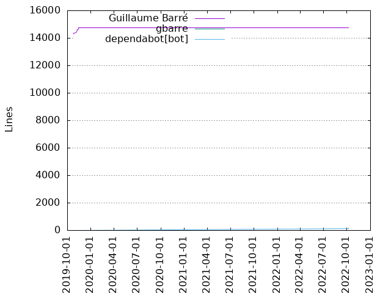
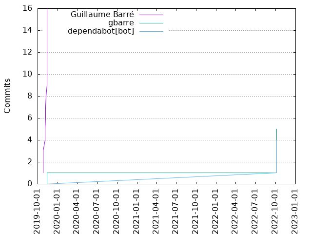

Authors
| Author | Commits (%) | + lines | - lines | First commit | Last commit | Age | Active days | # by commits |
|---|
| Guillaume Barre패 | 16 (64.00%) | 14748 | 201 | 2019-10-25 | 2019-11-13 | 18 days, 23:49:13 | 6 | 1 |
| gbarre | 5 (20.00%) | 0 | 0 | 2019-11-13 | 2022-10-06 | 1058 days, 3:24:48 | 2 | 2 |
| dependabot[bot] | 4 (16.00%) | 160 | 38 | 2022-10-06 | 2022-10-06 | 8:25:27 | 1 | 3 |


| Month | Author | Commits (%) | Next top 5 | Number of authors |
|---|
| 2022-10 | gbarre | 4 (50.00% of 8) | dependabot[bot] | 2 |
| 2019-11 | Guillaume Barre패 | 13 (92.86% of 14) | gbarre | 2 |
| 2019-10 | Guillaume Barre패 | 3 (100.00% of 3) | | 1 |
| Year | Author | Commits (%) | Next top 5 | Number of authors |
|---|
| 2022 | gbarre | 4 (50.00% of 8) | dependabot[bot] | 2 |
| 2019 | Guillaume Barre패 | 16 (94.12% of 17) | gbarre | 2 |
| Domains | Total (%) |
|---|
| ac-versailles.fr | 16 (64.00%) |
|---|
| users.noreply.github.com | 9 (36.00%) |
|---|